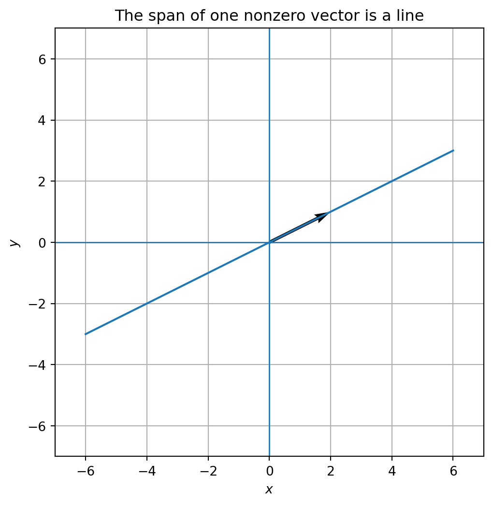
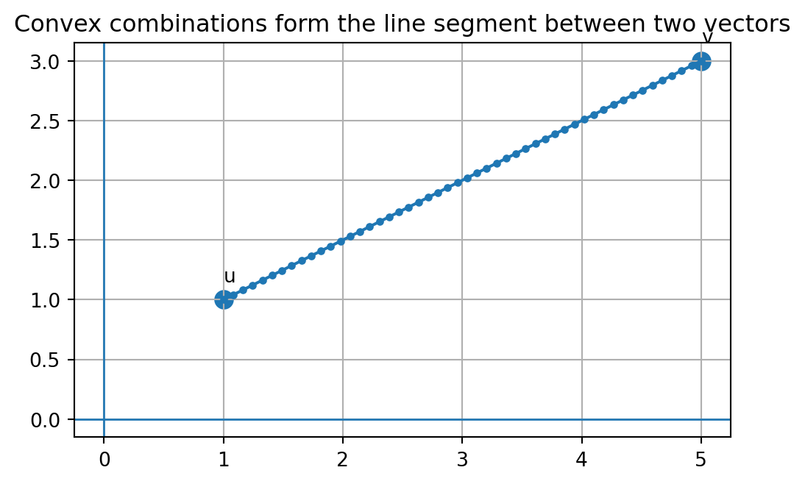
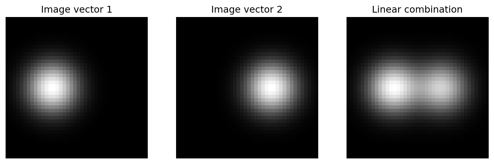

Code
import numpy as np
v1 = np.array([1, 2, 0], dtype=float)
v2 = np.array([3, -1, 4], dtype=float)
v3 = np.array([0, 5, 2], dtype=float)
result = 2*v1 - v2 + 0.5*v3
resultarray([-1. , 7.5, -3. ])Linear combinations, span, and the first grammar of linear algebra
In Chapter 1, we learned that the world can be translated into numbers. A temperature, an image, a sentence, a song, a customer profile, or a medical record can all become numerical data.
In Chapter 2, we learned that a list of numbers is not just a list. It can be a vector: a point, an arrow, a state, a feature list, or a signal.
Now we ask the next question:
Once we have vectors, how do we build new vectors from old ones?
This chapter is about the simplest and most powerful construction in linear algebra:
scale vectors, then add them.
That is all. But this simple action becomes the language of recipes, mixtures, forces, images, sounds, machine learning, coordinates, data compression, and scientific modeling.
A linear combination is the first grammar rule of linear algebra. It tells us how ideas combine.
Imagine that a small cafe has three basic ingredients:
One drink may be written as
\[ 2(\text{coffee}) + 1(\text{milk}) + 0(\text{chocolate}). \]
Another may be written as
\[ 1(\text{coffee}) + 2(\text{milk}) + 1(\text{chocolate}). \]
The ingredients are the building blocks. The numbers are the amounts. The final drink is the result.
Linear algebra uses exactly the same pattern. We start with basic vectors \(v_1,v_2,\ldots,v_k\). We choose numbers \(c_1,c_2,\ldots,c_k\). Then we form
\[ c_1v_1+c_2v_2+\cdots+c_kv_k. \]
This expression is a linear combination.
The vectors are ingredients. The coefficients are recipe amounts. The result is a new vector.
But unlike a cafe recipe, linear algebra allows negative amounts and fractional amounts. A negative coefficient means moving in the opposite direction. A fractional coefficient means taking part of a vector. A large coefficient means amplifying a vector.
This flexibility is what makes linear algebra powerful.
By the end of this chapter, you should be able to:
Linear algebra begins with two actions:
For example, let
\[ u = \begin{bmatrix}2\\1\end{bmatrix}, \qquad v = \begin{bmatrix}1\\3\end{bmatrix}. \]
Scaling gives
\[ 2u = \begin{bmatrix}4\\2\end{bmatrix}, \qquad 3v = \begin{bmatrix}3\\9\end{bmatrix}. \]
Adding gives
\[ 2u+3v = \begin{bmatrix}4\\2\end{bmatrix} + \begin{bmatrix}3\\9\end{bmatrix} = \begin{bmatrix}7\\11\end{bmatrix}. \]
So the expression \(2u+3v\) means:
A linear combination of vectors \(v_1,v_2,\ldots,v_k\) is any vector of the form
\[ c_1v_1+c_2v_2+\cdots+c_kv_k, \]
where \(c_1,c_2,\ldots,c_k\) are scalars.
The scalars \(c_1,c_2,\ldots,c_k\) are called coefficients or weights.
A linear combination is the algebraic version of a recipe.
The same expression can have different interpretations depending on the context.
If
\[ a = \begin{bmatrix}1\\0\end{bmatrix}, \qquad b = \begin{bmatrix}0\\1\end{bmatrix}, \]
then
\[ 3a+2b = \begin{bmatrix}3\\2\end{bmatrix}. \]
This means move 3 units to the right and 2 units up.
Suppose a product has three features: sweetness, acidity, and price. Let
\[ p_1=\begin{bmatrix}8\\2\\4\end{bmatrix}, \qquad p_2=\begin{bmatrix}3\\7\\6\end{bmatrix}. \]
Then
\[ 0.6p_1+0.4p_2 \]
is a weighted mixture: 60 percent of product 1 and 40 percent of product 2.
Computing gives
\[ 0.6\begin{bmatrix}8\\2\\4\end{bmatrix} + 0.4\begin{bmatrix}3\\7\\6\end{bmatrix} = \begin{bmatrix}6\\4\\4.8\end{bmatrix}. \]
The result is a new feature vector.
A sound wave can be built by combining simpler waves. A complicated signal may be written approximately as
\[ c_1(\text{low frequency}) + c_2(\text{middle frequency}) + c_3(\text{high frequency}). \]
This idea eventually leads to Fourier analysis.
An image is a grid of pixel values. If we flatten the grid into a long vector, then images can be combined:
\[ 0.7(\text{image A}) + 0.3(\text{image B}). \]
The result is a blended image.
Many machine learning models begin with a linear combination of features:
\[ w_1x_1+w_2x_2+\cdots+w_nx_n. \]
The coefficients \(w_i\) tell the model how much each feature contributes.
A linear combination is not just a formula. It is a way to describe how parts create a whole.
Let
\[ v_1 = \begin{bmatrix}1\\2\\0\end{bmatrix}, \qquad v_2 = \begin{bmatrix}3\\-1\\4\end{bmatrix}, \qquad v_3 = \begin{bmatrix}0\\5\\2\end{bmatrix}. \]
Find
\[ 2v_1-v_2+\frac{1}{2}v_3. \]
We compute one component at a time:
\[ 2v_1 = \begin{bmatrix}2\\4\\0\end{bmatrix}, \qquad -v_2 = \begin{bmatrix}-3\\1\\-4\end{bmatrix}, \qquad \frac12 v_3 = \begin{bmatrix}0\\2.5\\1\end{bmatrix}. \]
Therefore
\[ 2v_1-v_2+\frac12 v_3 = \begin{bmatrix}2\\4\\0\end{bmatrix} + \begin{bmatrix}-3\\1\\-4\end{bmatrix} + \begin{bmatrix}0\\2.5\\1\end{bmatrix} = \begin{bmatrix}-1\\7.5\\-3\end{bmatrix}. \]
import numpy as np
v1 = np.array([1, 2, 0], dtype=float)
v2 = np.array([3, -1, 4], dtype=float)
v3 = np.array([0, 5, 2], dtype=float)
result = 2*v1 - v2 + 0.5*v3
resultarray([-1. , 7.5, -3. ])Python is not a replacement for understanding. It is a microscope that lets us explore many examples quickly.
Once we can form linear combinations, we can ask a deeper question:
What are all the possible vectors we can create from a given set of vectors?
This set is called the span.
The span of vectors \(v_1,v_2,\ldots,v_k\) is the set of all linear combinations of those vectors:
\[ \operatorname{span}\{v_1,v_2,\ldots,v_k\} = \{c_1v_1+c_2v_2+\cdots+c_kv_k: c_1,\ldots,c_k\in\mathbb{R}\}. \]
The span answers:
What can be built from these vectors?
This is one of the central questions of the entire course.
Let
\[ v = \begin{bmatrix}2\\1\end{bmatrix}. \]
The span of \(v\) is
\[ \operatorname{span}\{v\}=\{cv:c\in\mathbb{R}\}. \]
This is the line through the origin in the direction of \(v\).
When \(c=0\), we get the zero vector. When \(c=1\), we get \(v\). When \(c=2\), we go twice as far. When \(c=-1\), we go in the opposite direction.
import matplotlib.pyplot as plt
v = np.array([2, 1], dtype=float)
cs = np.linspace(-3, 3, 100)
points = np.array([c*v for c in cs])
plt.figure(figsize=(6, 6))
plt.axhline(0, linewidth=1)
plt.axvline(0, linewidth=1)
plt.plot(points[:,0], points[:,1])
plt.quiver(0, 0, v[0], v[1], angles='xy', scale_units='xy', scale=1)
plt.xlim(-7, 7)
plt.ylim(-7, 7)
plt.gca().set_aspect('equal', adjustable='box')
plt.title('The span of one nonzero vector is a line')
plt.xlabel('$x$')
plt.ylabel('$y$')
plt.grid(True)
plt.show()
Let
\[ u = \begin{bmatrix}1\\0\end{bmatrix}, \qquad v = \begin{bmatrix}0\\1\end{bmatrix}. \]
Then every vector in \(\mathbb{R}^2\) can be written as
\[ \begin{bmatrix}a\\b\end{bmatrix} = a\begin{bmatrix}1\\0\end{bmatrix} + b\begin{bmatrix}0\\1\end{bmatrix}. \]
So
\[ \operatorname{span}\{u,v\}=\mathbb{R}^2. \]
The two vectors give us two independent directions. Together they can reach every point in the plane.
Now let
\[ u = \begin{bmatrix}2\\1\end{bmatrix}, \qquad v = \begin{bmatrix}4\\2\end{bmatrix}. \]
Here \(v=2u\). The second vector gives no new direction. So
\[ \operatorname{span}\{u,v\} \]
is still just one line.
Adding another vector only expands the span if it gives a genuinely new direction. If the new vector can already be built from the old ones, it does not enlarge the span.
A common question in linear algebra is:
Can the target vector \(b\) be built from the vectors \(v_1,\ldots,v_k\)?
This means:
\[ b \in \operatorname{span}\{v_1,\ldots,v_k\}. \]
Equivalently, we ask whether there exist coefficients \(c_1,\ldots,c_k\) such that
\[ c_1v_1+\cdots+c_kv_k=b. \]
Let
\[ v_1=\begin{bmatrix}1\\2\end{bmatrix}, \qquad v_2=\begin{bmatrix}3\\1\end{bmatrix}, \qquad b=\begin{bmatrix}7\\8\end{bmatrix}. \]
Can we build \(b\) from \(v_1\) and \(v_2\)?
We need numbers \(c_1,c_2\) such that
\[ c_1\begin{bmatrix}1\\2\end{bmatrix} + c_2\begin{bmatrix}3\\1\end{bmatrix} = \begin{bmatrix}7\\8\end{bmatrix}. \]
This gives the system
\[ \begin{aligned} c_1+3c_2 &= 7,\\ 2c_1+c_2 &= 8. \end{aligned} \]
Solving gives
\[ c_1=\frac{17}{5}, \qquad c_2=\frac{6}{5}. \]
So
\[ b=\frac{17}{5}v_1+\frac{6}{5}v_2. \]
v1 = np.array([1, 2], dtype=float)
v2 = np.array([3, 1], dtype=float)
b = np.array([7, 8], dtype=float)
A = np.column_stack([v1, v2])
coefficients = np.linalg.solve(A, b)
coefficientsarray([3.4, 1.2])A @ coefficientsarray([7., 8.])The matrix \(A\) stores the building blocks as columns. The coefficient vector stores the recipe. The product \(A c\) builds the final vector.
This is the bridge to matrices.
Suppose
\[ A= \begin{bmatrix} 1 & 3 \\ 2 & 1 \end{bmatrix}. \]
The columns of \(A\) are
\[ v_1=\begin{bmatrix}1\\2\end{bmatrix}, \qquad v_2=\begin{bmatrix}3\\1\end{bmatrix}. \]
If
\[ c=\begin{bmatrix}c_1\\c_2\end{bmatrix}, \]
then
\[ Ac = \begin{bmatrix} 1 & 3 \\ 2 & 1 \end{bmatrix} \begin{bmatrix}c_1\\c_2\end{bmatrix} = c_1\begin{bmatrix}1\\2\end{bmatrix} + c_2\begin{bmatrix}3\\1\end{bmatrix}. \]
The product \(Ac\) is a linear combination of the columns of \(A\). The entries of \(c\) are the coefficients.
This idea is so important that it is worth saying again:
A matrix does not just multiply a vector. A matrix uses the vector as a recipe for combining its columns.
This interpretation will be the foundation of later chapters.
A special type of linear combination appears in probability, data science, and geometry.
A convex combination of vectors \(v_1,\ldots,v_k\) is a linear combination
\[ c_1v_1+\cdots+c_kv_k \]
where
\[ c_i\ge 0 \quad\text{for all }i, \qquad c_1+\cdots+c_k=1. \]
Convex combinations describe weighted averages.
For two vectors \(u\) and \(v\), the convex combinations are
\[ (1-t)u+tv, \qquad 0\le t\le 1. \]
These points form the line segment between \(u\) and \(v\).
u = np.array([1, 1], dtype=float)
v = np.array([5, 3], dtype=float)
ts = np.linspace(0, 1, 50)
segment = np.array([(1-t)*u + t*v for t in ts])
plt.figure(figsize=(6, 5))
plt.plot(segment[:,0], segment[:,1], marker='o', markersize=3)
plt.scatter([u[0], v[0]], [u[1], v[1]], s=80)
plt.text(u[0], u[1]+0.15, 'u')
plt.text(v[0], v[1]+0.15, 'v')
plt.axhline(0, linewidth=1)
plt.axvline(0, linewidth=1)
plt.gca().set_aspect('equal', adjustable='box')
plt.title('Convex combinations form the line segment between two vectors')
plt.grid(True)
plt.show()
Convex combinations appear whenever we average, blend, interpolate, allocate resources, or combine probabilities.
Linear combinations are anchored at the origin. This is why the span of one nonzero vector is a line through the origin.
But many geometric objects do not pass through the origin. For example, the line through two points \(p\) and \(q\) is described by
\[ (1-t)p+tq, \qquad t\in\mathbb{R}. \]
This is called an affine combination because the coefficients add to 1:
\[ (1-t)+t=1. \]
Convex combinations are affine combinations with the extra condition \(0\le t\le 1\).
This distinction is important in data science. Linear combinations describe subspaces. Affine combinations describe shifted spaces. Convex combinations describe mixtures and averages.
In low dimensions, we can draw vectors. In high dimensions, we must think structurally.
A grayscale image with \(28\times 28\) pixels can be treated as a vector in \(\mathbb{R}^{784}\). A document with 10,000 word-count features can be treated as a vector in \(\mathbb{R}^{10000}\). A neural network embedding may be a vector in \(\mathbb{R}^{768}\), \(\mathbb{R}^{1536}\), or much larger.
A linear combination still has the same form:
\[ c_1v_1+\cdots+c_kv_k. \]
The meaning is unchanged. Only the number of components grows.
# A small synthetic image example
n = 40
x = np.linspace(-1, 1, n)
X, Y = np.meshgrid(x, x)
image1 = np.exp(-8*((X+0.35)**2 + Y**2))
image2 = np.exp(-8*((X-0.35)**2 + Y**2))
blend = 0.55*image1 + 0.45*image2
fig, axes = plt.subplots(1, 3, figsize=(11, 3.5))
for ax, img, title in zip(axes, [image1, image2, blend], ['Image vector 1', 'Image vector 2', 'Linear combination']):
ax.imshow(img, cmap='gray')
ax.set_title(title)
ax.axis('off')
plt.show()
Each image has \(40\times 40=1600\) pixels. After flattening, each image is a vector in \(\mathbb{R}^{1600}\). The blend is a linear combination of two high-dimensional vectors.
Linear combinations are everywhere.
They appear in:
In later chapters, we will often ask:
Can this vector be built from those vectors?
That question is the heart of linear algebra.
Let
\[ a=\begin{bmatrix}2\\0\end{bmatrix}, \qquad b=\begin{bmatrix}0\\3\end{bmatrix}. \]
Compute \(4a-2b\).
\[ 4a-2b = 4\begin{bmatrix}2\\0\end{bmatrix} -2\begin{bmatrix}0\\3\end{bmatrix} = \begin{bmatrix}8\\0\end{bmatrix} + \begin{bmatrix}0\\-6\end{bmatrix} = \begin{bmatrix}8\\-6\end{bmatrix}. \]
This means move 8 units in the first direction and 6 units in the negative second direction.
Let
\[ v_1=\begin{bmatrix}1\\1\end{bmatrix}, \qquad v_2=\begin{bmatrix}1\\-1\end{bmatrix}. \]
Can
\[ b=\begin{bmatrix}5\\1\end{bmatrix} \]
be built from \(v_1\) and \(v_2\)?
We need \(c_1v_1+c_2v_2=b\). So
\[ c_1\begin{bmatrix}1\\1\end{bmatrix} +c_2\begin{bmatrix}1\\-1\end{bmatrix} = \begin{bmatrix}5\\1\end{bmatrix}. \]
This gives
\[ \begin{aligned} c_1+c_2 &= 5,\\ c_1-c_2 &= 1. \end{aligned} \]
Adding the equations gives \(2c_1=6\), so \(c_1=3\). Then \(c_2=2\). Therefore
\[ b=3v_1+2v_2. \]
Let
\[ u=\begin{bmatrix}2\\4\end{bmatrix}, \qquad v=\begin{bmatrix}1\\2\end{bmatrix}. \]
Describe \(\operatorname{span}\{u,v\}\).
Since
\[ u=2v, \]
the two vectors point in the same direction. They do not create a plane. Their span is the line through the origin in the direction of \(v\):
\[ \operatorname{span}\{u,v\} = \operatorname{span}\{v\}. \]
Let
\[ v_1=\begin{bmatrix}1\\0\\2\end{bmatrix}, \quad v_2=\begin{bmatrix}0\\1\\1\end{bmatrix}, \quad v_3=\begin{bmatrix}2\\1\\0\end{bmatrix}. \]
Compute \(v_1-2v_2+3v_3\).
\[ v_1-2v_2+3v_3 = \begin{bmatrix}1\\0\\2\end{bmatrix} -2\begin{bmatrix}0\\1\\1\end{bmatrix} +3\begin{bmatrix}2\\1\\0\end{bmatrix}. \]
So
\[ = \begin{bmatrix}1\\0\\2\end{bmatrix} + \begin{bmatrix}0\\-2\\-2\end{bmatrix} + \begin{bmatrix}6\\3\\0\end{bmatrix} = \begin{bmatrix}7\\1\\0\end{bmatrix}. \]
Let
\[ a=\begin{bmatrix}3\\-1\end{bmatrix}, \qquad b=\begin{bmatrix}2\\4\end{bmatrix}. \]
Compute \(2a+5b\).
\[ 2a+5b =2\begin{bmatrix}3\\-1\end{bmatrix} +5\begin{bmatrix}2\\4\end{bmatrix} =\begin{bmatrix}6\\-2\end{bmatrix} +\begin{bmatrix}10\\20\end{bmatrix} =\begin{bmatrix}16\\18\end{bmatrix}. \]
Let
\[ v_1=\begin{bmatrix}1\\2\end{bmatrix}, \qquad v_2=\begin{bmatrix}2\\4\end{bmatrix}. \]
What geometric object is \(\operatorname{span}\{v_1,v_2\}\)?
Since \(v_2=2v_1\), the two vectors are in the same direction. Their span is a line through the origin.
Let
\[ v_1=\begin{bmatrix}1\\0\end{bmatrix}, \qquad v_2=\begin{bmatrix}1\\1\end{bmatrix}. \]
Find coefficients \(c_1,c_2\) such that
\[ c_1v_1+c_2v_2=\begin{bmatrix}4\\3\end{bmatrix}. \]
We need
\[ c_1\begin{bmatrix}1\\0\end{bmatrix} +c_2\begin{bmatrix}1\\1\end{bmatrix} = \begin{bmatrix}4\\3\end{bmatrix}. \]
This gives
\[ \begin{aligned} c_1+c_2 &= 4,\\ c_2 &= 3. \end{aligned} \]
So \(c_2=3\) and \(c_1=1\).
Let
\[ p=\begin{bmatrix}1\\2\end{bmatrix}, \qquad q=\begin{bmatrix}5\\6\end{bmatrix}. \]
Compute the midpoint using a convex combination.
The midpoint is
\[ \frac12p+\frac12q = \frac12\begin{bmatrix}1\\2\end{bmatrix} + \frac12\begin{bmatrix}5\\6\end{bmatrix} = \begin{bmatrix}3\\4\end{bmatrix}. \]
Explain in words why \(\operatorname{span}\{v\}\) always contains the zero vector.
The span of \(v\) contains all vectors of the form \(cv\). If we choose \(c=0\), then \(cv=0v=0\). So the zero vector is always in the span.
Find two different pairs of coefficients \((c_1,c_2)\) that produce the same vector from
\[ v_1=\begin{bmatrix}1\\2\end{bmatrix}, \qquad v_2=\begin{bmatrix}2\\4\end{bmatrix}. \]
Since \(v_2=2v_1\), many recipes give the same result. For example,
\[ 2v_1+0v_2=\begin{bmatrix}2\\4\end{bmatrix}, \]
and
\[ 0v_1+1v_2=\begin{bmatrix}2\\4\end{bmatrix}. \]
So the same vector can have more than one recipe when the building blocks are redundant.
Let
\[ u=\begin{bmatrix}1\\0\\1\end{bmatrix}, \qquad v=\begin{bmatrix}0\\1\\1\end{bmatrix}. \]
Describe all vectors in \(\operatorname{span}\{u,v\}\).
A general linear combination is
\[ a\begin{bmatrix}1\\0\\1\end{bmatrix} +b\begin{bmatrix}0\\1\\1\end{bmatrix} = \begin{bmatrix}a\\b\\a+b\end{bmatrix}. \]
So the span is the plane
\[ \{(x,y,z): z=x+y\}. \]
Suppose \(I_1\) and \(I_2\) are two grayscale images of the same size. What does \(0.25I_1+0.75I_2\) mean?
It means each pixel in the new image is computed as 25 percent of the corresponding pixel in \(I_1\) plus 75 percent of the corresponding pixel in \(I_2\). As vectors, the images are high-dimensional vectors, and the blended image is a linear combination.
np.random.seed(1)
# Three random building blocks in R^5
V = np.random.randn(5, 3)
coeff = np.array([2.0, -1.0, 0.5])
result = V @ coeff
print('Building blocks as columns:')
print(V)
print('\nCoefficient recipe:')
print(coeff)
print('\nResulting vector:')
print(result)Building blocks as columns:
[[ 1.62434536 -0.61175641 -0.52817175]
[-1.07296862 0.86540763 -2.3015387 ]
[ 1.74481176 -0.7612069 0.3190391 ]
[-0.24937038 1.46210794 -2.06014071]
[-0.3224172 -0.38405435 1.13376944]]
Coefficient recipe:
[ 2. -1. 0.5]
Resulting vector:
[ 3.59636126 -4.16211422 4.41034998 -2.99091904 0.30610467]Even though the vectors live in \(\mathbb{R}^5\), the recipe only uses three building blocks. The result must lie in the span of those three vectors.
Use an AI assistant as a patient study partner, not as a replacement for your thinking.
Ask:
Explain the expression \(3v_1-2v_2+0.5v_3\) using a recipe analogy, a movement analogy, and a data-science analogy.
Then compare the three explanations. Which one helps you most?
Ask:
Give me three pairs of vectors in \(\mathbb{R}^2\): one pair whose span is a line, one pair whose span is the whole plane, and one pair where the two vectors are nearly parallel. Include a picture idea for each.
Then verify the examples by hand.
Ask:
In a linear model \(w_1x_1+\cdots+w_nx_n\), what are the vectors or quantities being combined, and what do the coefficients mean?
Use the answer to preview later chapters on matrix machines and neural networks.
A linear combination is the act of scaling vectors and adding the results. It is the simplest way to build new vectors from old ones.
The span of a set of vectors is everything that can be built from those vectors.
In pictures:
In formulas:
\[ c_1v_1+c_2v_2+\cdots+c_kv_k \]
is a vector sentence. The vectors are the words. The coefficients are the grammar. The result is a new idea.
In the next chapter, we will view data as points. Each row of a dataset can be a vector. A collection of vectors can become a cloud of points.
Linear combinations help us understand how such points are created, compared, averaged, compressed, and modeled.
This chapter gives us the first construction rule. The rest of linear algebra will build on it.